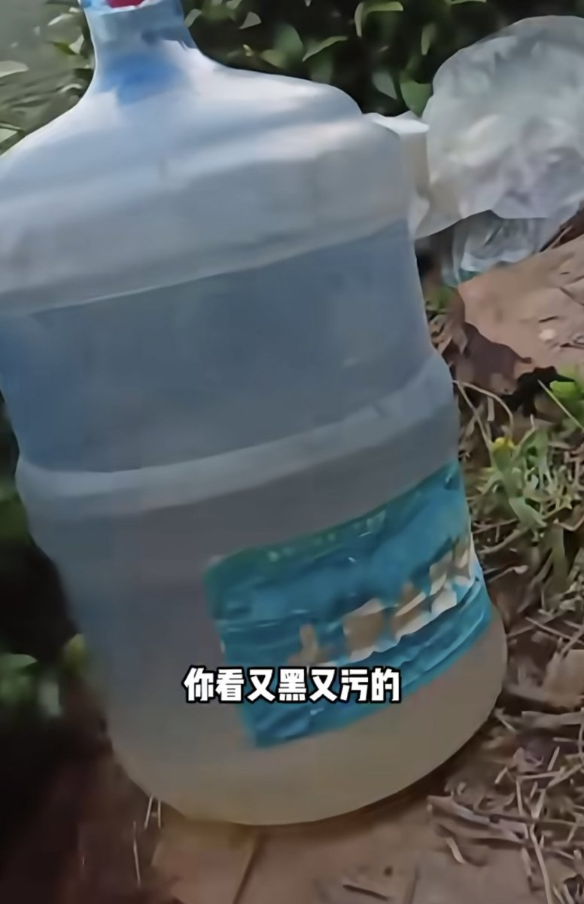

432InfantryRegiment
@432Ifantrygroup
@yoyobewild 墙内网友就是这样，一句伟大就给打发了。你要是真去争取权利就该骂你了。

悠悠的信
@yoyobewild
采茶女生存状况再次引起注意。
打多年前被爆出几十个人挤在铁皮屋里、下雨天强制劳动等等恶劣待遇后，今年又爆出女工的饮用水是污水。
我希望劳动妇女所得到的不仅仅是“伟大”之类的空洞赞美，我更希望劳动妇女能够被当成活生生的人来看。
另外，子宫垂脱，节育环，这些也是更普遍的关于劳动妇女的问题 https://t.co/xMyU7ZgM2L